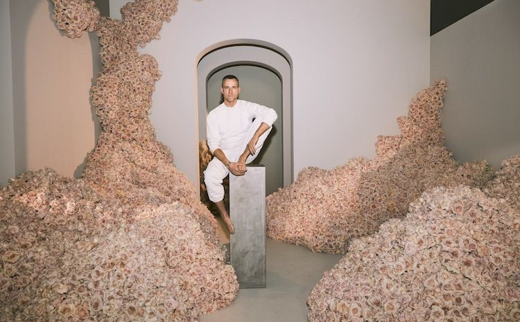
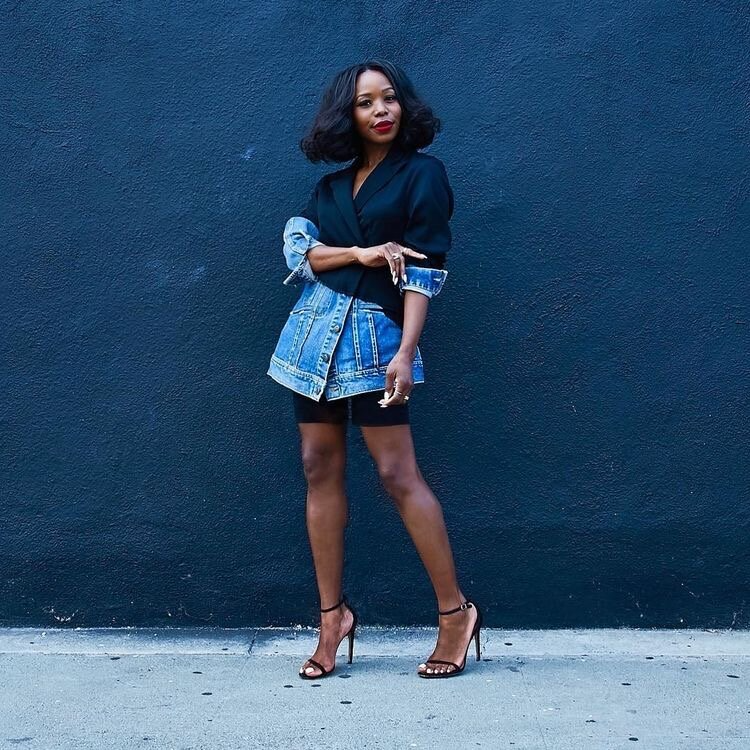
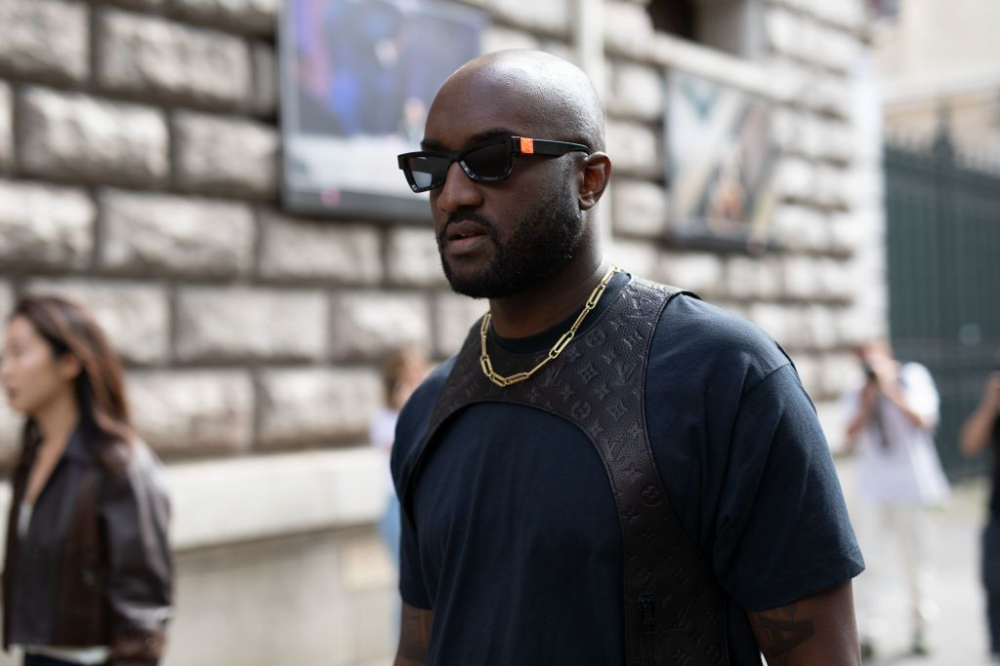

home
inspiration
topfive
My name is Anesha Green
All these artists speak to me in their own way with their own stories and motivates me at different times. The hurdles we encounter are just a part of our plan and just encourages me to keep going.
Jeff Leatham
jeff leatham

I love flowers to say the least and the way he creates his designs are amazing. I wish I could post more. I discovered him looking on instagram, working with the Kardashians as their floral designer. I kept wondering who's behind these masterpieces. I fell in love. I love how he goes out the box and his scale is grand. His simplicity with the colors and lines.
Kahlana Barfield Brown
kahlana barfield brown

Kahlana is very simple and I love black , white , earth tones , and bold colors. Whether it's a striped button up with some Nike dunks at work or a blazer with heels for sundry brunch with the girls , her style is my go to for inspiration. I love her oversized jeans and blazers with heels.
Virgil Abloh
virgil abloh

I love to see everyone win , but I love to see when the Black culture elevates and wins. Virgil is a black designer who founded the brand Off-White.He has collaborations with Nike and became the first Black creative director of Louis Vuitton men's wear. That set my heart on fire and his vision for his brand and others blew everyone out of the park.He understands the creative process and its value and he will be forever remembered for this.